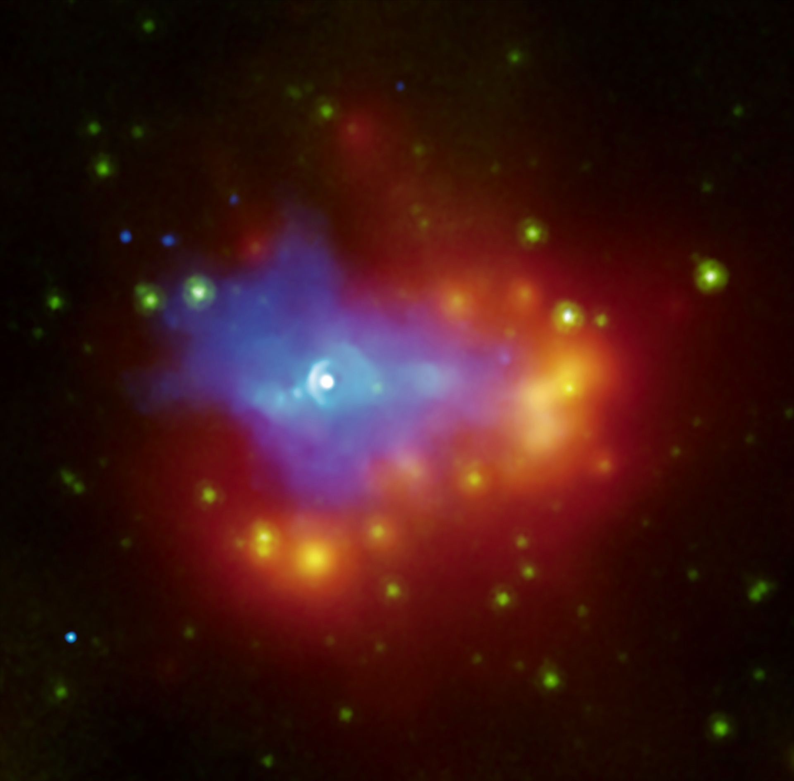
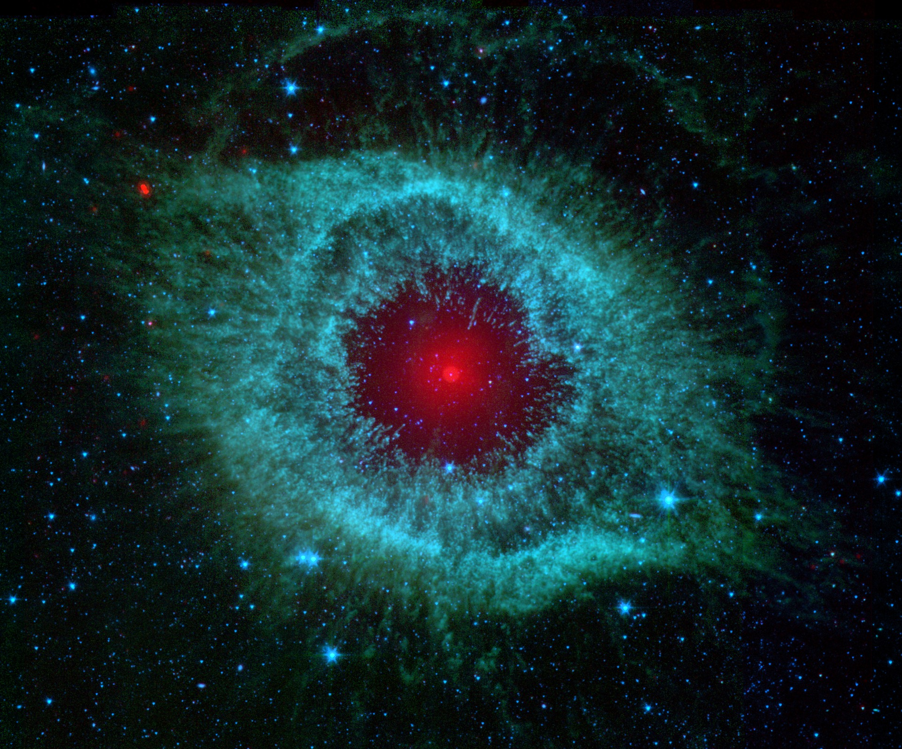
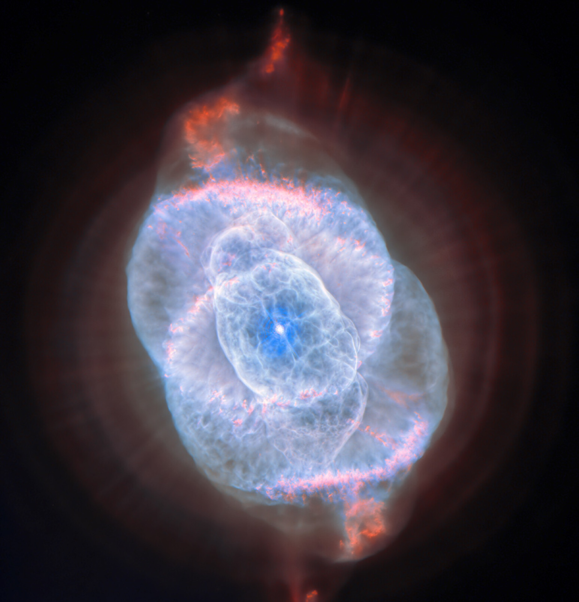

Giant Magnetar Bursts

Relativistic MHD simulations show how sudden surface shear can twist the magnetosphere, eject a plasmoid, and leave a trapped fireball.
Neutron stars add two ingredients that black holes do not have: a material surface and an anchored magnetic field. I study how these change the flow of matter and energy, reshape outflows, and produce pulses, bursts, and other fast high-energy signals.

Relativistic MHD simulations show how sudden surface shear can twist the magnetosphere, eject a plasmoid, and leave a trapped fireball.

Ongoing 3D, non-radiative simulations resolve warped disks, magnetically channelled columns, surface hotspots, and time-dependent accretion.

Current calculations find collimated outflows whose power oscillates as the tilted disk couples to the rotating stellar magnetosphere.
I use H-AMR and an implemented hybrid force-free–MHD treatment to study accretion when the disk, magnetic axis, and stellar rotation are not aligned. The present calculations focus on the non-radiative plasma dynamics and their time dependence.
Comparing systems with and without a surface helps separate universal plasma behavior from the physics unique to an event horizon, magnetosphere, or stellar boundary.